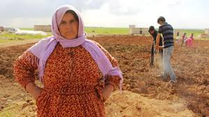

La agricultura ha sido tradicionalmente un pilar fundamental de la economía siria, empleando a una gran parte de la población y suministrando productos básicos como trigo, algodón, frutas, verduras y aceite de oliva.
No obstante, el conflicto y el cambio climático han afectado severamente la producción agrícola. La pérdida de acceso a tierras, el daño a infraestructuras de riego y la inseguridad han limitado la capacidad de los agricultores para cultivar y comercializar sus productos.
Antes de la guerra, Siria contaba con una industria manufacturera en sectores como textiles, productos químicos, alimentos procesados y materiales de construcción. La destrucción de fábricas, la fuga de capital humano y la interrupción de cadenas de suministro afectaron gravemente este sector.
El sector servicios, que incluye comercio, transporte, turismo y finanzas, también ha sido duramente golpeado. El turismo, que alguna vez fue una fuente importante de divisas, se ha reducido casi a cero debido a la inseguridad.
La reconstrucción de Siria enfrenta enormes desafíos financieros y logísticos. La magnitud de los daños en infraestructura y viviendas requiere inversiones multimillonarias, que son difíciles de obtener debido a las sanciones y al aislamiento internacional.
La moneda nacional, la libra siria, ha sufrido una fuerte devaluación en los últimos años, causando una inflación galopante que afecta el poder adquisitivo de los ciudadanos. Esto ha incrementado la pobreza y la inseguridad alimentaria.
Las sanciones impuestas por Estados Unidos, la Unión Europea y otros países limitan las relaciones comerciales y financieras con Siria, obstaculizando la entrada de inversión extranjera y acceso a tecnología y bienes esenciales.
El desempleo crónico y la pobreza extrema son problemas graves. Según la ONU, más del 80% de la población vive por debajo del umbral de pobreza, y muchos dependen de la ayuda humanitaria para sobrevivir.

Siria es uno de los países con más historia del mundo. Su territorio ha sido hogar de algunas de las civilizaciones más antiguas conocidas por la humanidad. Desde los primeros asentamientos neolíticos hasta los conflictos contemporáneos, Siria ha jugado un papel fundamental en la historia de Oriente Medio y del mundo. Esta sección explora a fondo su historia en diferentes etapas: la antigüedad, la época clásica, la dominación islámica, el mandato francés y la era moderna.
Los vestigios arqueológicos hallados en lugares como Ebla, Mari y Ugarit demuestran que Siria ya estaba habitada hacia el 10.000 a.C. Durante el período del Bronce Antiguo, estas ciudades-estado florecieron con complejas estructuras políticas y sistemas de escritura propios. Ebla, en particular, es conocida por sus tablillas de arcilla que representan uno de los primeros archivos escritos del mundo.
A lo largo de los siglos, Siria fue conquistada por diversos imperios: el acadio, el asirio, el babilonio y el persa. Su ubicación estratégica la convirtió en un puente entre Asia, África y Europa, haciendo que siempre estuviera en el centro del comercio y la guerra.
Con la conquista de Alejandro Magno, Siria pasó a formar parte del mundo helenístico bajo la dinastía seléucida. Posteriormente, fue incorporada al Imperio Romano y luego al Bizantino. Ciudades como Palmira y Antioquía se convirtieron en centros culturales, económicos y religiosos de gran relevancia.
Palmira fue especialmente significativa como un importante enclave en las rutas comerciales que conectaban Roma con Persia, India y China. Su reina más famosa, Zenobia, desafió al poder romano en el siglo III d.C., antes de ser derrotada por el emperador Aureliano.
En el siglo VII, los ejércitos islámicos conquistaron Siria y la incorporaron al califato omeya, con sede en Damasco. Bajo los omeyas, Siria vivió un período de esplendor cultural y arquitectónico. La Gran Mezquita de los Omeyas en Damasco es uno de los mejores ejemplos de este legado.
Con el tiempo, Siria pasó por las manos de los abasíes, cruzados, mamelucos y finalmente los otomanos, que gobernaron la región desde 1516 hasta la Primera Guerra Mundial. Durante este extenso período otomano, Siria mantuvo una cierta estabilidad política, aunque sufrió una gradual decadencia económica.
Tras la caída del Imperio otomano en la Primera Guerra Mundial, Siria fue colocada bajo mandato francés según los acuerdos Sykes-Picot. Este período estuvo marcado por levantamientos nacionalistas, como la revuelta de 1925 liderada por Sultan al-Atrash, y una constante lucha por la independencia.
Finalmente, Siria logró su independencia en 1946. Sin embargo, los primeros años de independencia estuvieron marcados por inestabilidad política, con múltiples golpes de estado y una débil institucionalidad.
En 1971, Hafez al-Assad llegó al poder tras un golpe militar. Su régimen instauró una dictadura autoritaria bajo el Partido Baaz, consolidando el poder mediante una fuerte represión. A su muerte en el año 2000, su hijo Bashar al-Assad asumió la presidencia.
La Primavera Árabe de 2011 encendió protestas en Siria que fueron brutalmente reprimidas. Esto desató una guerra civil que ha dejado cientos de miles de muertos y millones de desplazados. El conflicto ha involucrado potencias extranjeras, grupos extremistas y diversas milicias.
Hoy en día, Siria sigue fragmentada entre diversas facciones, con un gobierno central debilitado y una economía en ruinas. La reconstrucción y reconciliación nacional son grandes desafíos pendientes.
A lo largo de los milenios, Siria ha sido un punto de encuentro entre civilizaciones. Su legado histórico abarca desde las primeras escrituras hasta monumentos religiosos, pasando por filosofía, comercio y cultura. A pesar de sus problemas actuales, Siria sigue siendo uno de los territorios más ricos en patrimonio histórico del mundo.